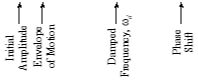
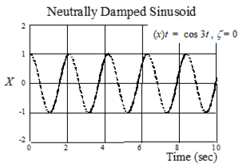
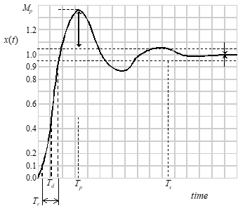
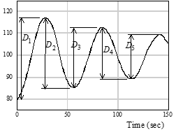
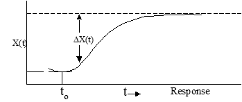
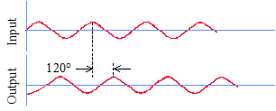
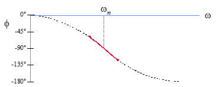

8 Motion & Vibration Analysis
8.1 Recurring Abbreviations
| \(C_{\frac{1}{x}}\) | number of cycles to achieve \(\frac{1}{x}\) amplitude |
| \(D\) | damping |
| \(D_1,D_2\) | peak-to-peak displacement (subsequent) |
| \(\mathrm{FV}\) | final value |
| \(F(t)\) | forcing function |
| \(f\) | frequency, cycles/sec = \(\omega / \left( 2\pi \right)\) |
| \(\mathrm{HCAR}\) | half cycle amplitude ratio (i.e., \(x_2/x_1\), \(x_3/x_2\), etc.) |
| \(\mathrm{Im}\) | imaginary axis |
| \(M\) | mass |
| \(\mathrm{MP}\) | peak overshoot |
| \(\mathrm{Re}\) | real axis |
| \(\mathrm{rms}\) | root mean square |
| \(s_1\), \(s_2\) | equation roots of second order |
| \(T\) | period = \(1/f\) = \(2\pi/\omega_d\) (seconds) |
| \(T_d\) | delay time (i.e., time to 50% of \(\mathrm{FV}\) ) |
| \(T_r\) | rise time (i.e., time from 10% to 90% of \(\mathrm{FV}\) ) |
| \(T_p\) | time to peak amplitude |
| \(\mathrm{TPR}\) | transient peak ratio |
| \(T_s\) | settling time (time to settle within \(x\%\) of \(\mathrm{FV}\) ) |
| \(T_{\frac{1}{x}}\) | time to achieve \(\frac{1}{x}\) amplitude |
| \(x\) | displacement |
| \(x_1\), \(x_2\) | peak displacements (subsequent) |
| \(v\) | velocity |
| \(v_0\) | peak velocity |
| \(\varepsilon\) | \(= \zeta \omega_n / \omega_d = \zeta / \sqrt{1 - \zeta^2}\) |
| \(\phi\) | phase lag (radians) |
| \(\zeta\) | damping coefficient (non-dimensional) |
| \(\sigma\) | damping rate \(=\zeta \omega_n = 1/\tau\) |
| \(\tau\) | time constant \(=1/\zeta \omega_n\) |
| \(\omega\) | frequency, radians/sec |
| \(\omega_d\) | damped natural frequency (rad/sec) |
| \(\omega_n\) | natural frequency (rad/sec) |
8.2 First Order Motion
Found in classical aircraft roll and spiral modes. Named first-order because the motions are described by mathematics using the first derivative of a parameter.
8.2.1 Elements of First Order Motion
Mechanical analogy contains elements of mass, damping and sometimes a forcing function.
Example 1: Determine the vertical velocity of a diver as she hits the water at \(10\) ft/s (assume constant body position & neutral buoyancy)
Summing vertical forces gives
[ \[\begin{align} \sum F_{\mathrm{vert}} : &M \frac{dV}{dt} + DV = 0 \\ &\frac{dV}{V} + \frac{D}{M} dt = 0 \\ &\int{}{} \frac{dV}{V} = -\int{}{} \frac{D}{M} dt \end{align}\]
Since \(D\) & \(M\) are constant
[ \[\begin{align} \ln V &= -\frac{D}{M} t + C = -\frac{D}{M} t + \ln c\\ V_c &= c e^{-\frac{D}{M} t} \;\;\text{complementary solution}\\ \end{align}\] Apply initial condition
[ \[\begin{align} V(t=0) &= 10 \mathrm{ft/s} \Rightarrow \\ 10 &= C \\ V_T &= 10 e^{-\frac{D}{M} t} \end{align}\]
Plot response over time

Exponential rate of decay described by \(\frac{D}{M}\) ratio
Example 2: Diver with \(20\) lb submerged weight releases from zero velocity at top of pool (quiescent condition).
Solve using Laplace analysis methods:
\[\begin{align} M\dot{V} + DV &= 20 \;\;\text{step input} \\ M\left[ sV(s) - V(0) \right] + D V(s) &= \frac{20}{s} \\ sV(s) - V(0) + \frac{D}{M} V(s) &= \frac{20}{M} \frac{1}{s} \\ V(s) \left(s + \frac{D}{M} \right) &= \frac{20}{M} \frac{1}{s} + V(0) \\ V(s) &= \frac{ \frac{20}{M} \frac{1}{s} + V(0) }{s + \frac{D}{M} } \\ &= \left\{ \frac{ \frac{20}{M} } {s \left( s + \frac{D}{M} \right) } \right\} + \frac{V(0)}{s + \frac{D}{M}} \\ \end{align}\]
Use partial fraction:
\[\begin{align}
\frac{ \frac{20}{M} }{s \left( s + \frac{D}{M} \right) } &= \frac{A}{s} + \frac{B}{s + \frac{D}{M}}\\
&= \frac{A \left( s + \frac{D}{M} \right)}{s \left( s + \frac{D}{M} \right) } + \frac{B s}{s \left( s + \frac{D}{M} \right) }\\
&= \frac{A \left( s + \frac{D}{M} \right) + B s}{s \left( s + \frac{D}{M} \right) }\\
\therefore \frac{20}{M} &= A \left( s + \frac{D}{M} \right) + B s
\end{align}\]
]
let \(s = -\frac{D}{M}\):
\[\frac{20}{M} = 0 + B \left(-\frac{D}{M}\right) \Rightarrow B = -\frac{20}{D} \]
let \(s = 0\):
\[\frac{20}{M} = A \left( 0 + \frac{D}{M} \right) + 0 \Rightarrow A = \frac{20}{D} \]
\[\begin{align} V(s) &= \left\{ \frac{A}{s} + \frac{B}{s + \frac{D}{M}} \right\} + \frac{V(0)}{s + \frac{D}{M}} \\ &= \left\{ \frac{\frac{20}{D}}{s} + \frac{-\frac{20}{D}}{s + \frac{D}{M}} \right\} + \frac{V(0)}{s + \frac{D}{M}} \\ V(t) &= \left\{ \frac{20}{D} -\frac{20}{D}e^{-\frac{D}{M}t} \right\} + V(0)e^{-\frac{D}{M}t} \\ \end{align}\]
since \(V(0) = 0\) then
\[ V(t) = \frac{20}{D} \left[ 1 -e^{-\frac{D}{M}t} \right] \]
Note that the steady state value, \(V_{\mathrm{ss}} = \frac{20}{D}\), i.e.
\[ V(t) = V_{\mathrm{ss}} \left[1 -e^{-\frac{D}{M}t} \right] \]
This “force/damping” ratio is merely a scaling factor for the steady state.

Several methods can be used to describe the quickness of convergence toward steady state (e.g., time to \(99.999\%\) of \(V_{\mathrm{ss}}\), time to \(1/2\) \(V_{\mathrm{ss}}\)).
By convention, we use a \(\%\) that directly reflects the exponent.
Establish a time constant \(\tau\) based on \(\frac{D}{M}\).
\[\frac{D}{M} \equiv \frac{1}{\tau} \]
so
\[e^{-\frac{D}{M}t} = e^{-\frac{t}{\tau}}\]
when
\[t = \tau\]
then
\[e^{-\frac{t}{\tau}} = e^{-\frac{\tau}{\tau}} = e^{-1} = 0.36788\]
so, after \(\frac{M}{D}\) seconds have elapsed, \(V = V_{\mathrm{ss}} \left[1 0.36788 \right] = 63.212\% V_{\mathrm{ss}}\)
\(\tau =\) time constant (time for parameter to reach \(~63\%\) of it’s steady state value)
8.2.2 First Order Motion Descriptive Parameters
\[ x(t) = e^{-\zeta \omega_n t} = e^{-\frac{t}{\tau}} \]

| when \(t = 0.6931\tau\): | \(x = e^{−0.6931}\) | \(= 0.5\) (time to half amplitude) |
| when \(t = \tau\): | \(x = e^{−1}\) | \(= 0.37\) |
| when \(t = 3\tau\): | \(x = e^{−3}\) | \(= 0.05\) |
| when \(t = 4\tau\): | \(x = e^{−4}\) | \(= 0.02\) |
If exponent \(> 0\), then motion is divergent.
\[x(t) = ce^{mt}\]
where \(m > 0\)

\(\tau\) again describes the exponential rate of divergence.
By convention, the “time to double amplitude” (\(t_2\)) is usually applied as the evaluation metric.
\(x_{t_2} = 2x_0\) where \(x_0 = ce^{m\cdot 0}\)
Therefore
\[\begin{align} x_2 &= 2c \\ 2c &= ce^{mt_2} \\ 2 &= e^{mt_2} \\ \ln 2 &= mt_2 \\ \therefore \text{Time to double amplitude } \frac{0.6931}{m} = t_2 = 0.693\tau \\ \end{align}\]
8.2.3 Determining \(\tau\) from Step Input Time History
Method #1
\(\tau\) = time to reach \(0.632 x_{\mathrm{ss}}\)

Method #2
- Define \(x_{\mathrm{ss}}\)
- Measure \(x_1\) at some time \(t_1\)
- Calculate \(x_2 = 0.632 \left( x_{\mathrm{ss}} + 0.58 x_1 \right)\)
- Find \(t_2\) corresponding to \(x_2\)
- \(t_2 - t_1 = \tau\)

Method #3
- Pick any time \(t_1\).
- Draw tangent at \(t_1\).
- Note \(t_2\) where tangent intercepts \(x_{\mathrm{ss}}\).
- \(\tau = t_2 -t_1\)

Method #4
When \(X_{\mathrm{SS}}\) is unknown use
\[\tau = \frac{\Delta t}{\ln \left( \frac{A_1}{A_2} \right)} \]

Method #5
When \(X_{\mathrm{SS}}\) is known, use
\[\tau = \frac{-\Delta t}{\ln \left[ \frac{X_{\mathrm{SS}} - X_1}{X_{\mathrm{SS}} - X_2} \right]} \]
Linearity check:
Note parameter change between even time increments.
Plot parameter changes vs elapsed time on semi-log scale

Slope of line equals \(\tau\)

8.3 Second Order Motion
Found in classical aircraft phugoid, Dutch roll and short period modes as well as noise filter and vibration testing. Named second-order because the motions are described by mathematics using the second derivative of a parameter.
8.3.1 Elements of Second Order Motion
Mechanical systems have elements of spring, mass, and usually damping. Forcing functions can be included (see illustration).

| \(K\) | spring stiffness ( \(F/x\) ) |
| \(x\) | displacement from equilibrium |
| \(M\) | mass |
| \(F\left(t\right)\) | forcing function |
| \(D\) | damping |
\[\sum{}{} F_{\mathrm{vert}} : M\ddot{x} + D\dot{x} + Kx = F(t) \]
Natural character is observed when system is allowed to move with no external input [\(F(t) = 0\)]
\[\sum{}{} F_{\mathrm{vert}} : M\ddot{x} + D\dot{x} + Kx = 0 \]
Apply operator technique:
Let
\[ x = e^{st} \text{, } \dot{x} = s e^{st} \text{, } \ddot{x} = s^2 e^{st} \\ \Rightarrow e^{st} \left( M s^2 + D s + K \right) = 0 \\ \]
Divide out \(e^{st}\), since it never equals zero, the characteristic equation remains:
\[ M s^2 + D s + K = 0 \text{ or } s^2 + \frac{D}{M} s + \frac{K}{M} = 0\\ \]
The values of \(s\) that satisfy this equation are called the roots
\[ x = c_1 e^{s_1 t} + c_2 e^{s_2 t} \]
Solve for the roots using the quadratic equation
8.3.2 Second Order Motion Descriptive Parameters
Solution (\(x\)) calculated as
\[ x = c_1 e^{\tau_1 t} + c_2 e^{\tau_2 t} \text{ where } s_1\text{, } s_2 = -\frac{D}{2M} \pm j \sqrt{ \frac{K}{M} - \left( \frac{D}{2M} \right)^2 } \]
Apply Euler’s identity for complex conjugate roots
\[ x = A e^{-\frac{D}{2M} t} \sin \left( \sqrt{\frac{K}{M} - \left(\frac{D}{2M} \right)^2} t + \phi \right) \]
- \(\phi\) defines the phase shift.
- \(A\) defines the initial amplitude.
- The real part of the root \(\frac{D}{2M}\) defines the envelope of the motion.
- The imaginary part of the root identifies the damped frequency of the oscillations, \(\omega_d\) [rad/sec].
\[ \omega_d = \sqrt{\frac{K}{M} - \left(\frac{D}{2M} \right)^2} \]
- If damping is reduced to \(D= 0\) then only \(\sqrt{\frac{K}{M}}\) remains.
- This is the undamped or “natural” frequency ( \(\omega_n\) ).
\[ \omega_n \equiv \sqrt{\frac{K}{M}} \]
- If \(\left( \frac{D}{2M} \right)^2 = \frac{K}{M}\) then \(D\) is considered to be critical (just enough to prevent oscillations)
\[ D_{\mathrm{crit}} = \sqrt{\frac{K}{M}} 2M = 2 \sqrt{KM} \]
- For oscillatory motion, actual system damping is typically expressed as a fraction critical damping. Define damping ratio as
\[ \zeta \equiv \frac{D}{ D_{ \mathrm{crit} } } = \frac{D}{ 2 \sqrt{KM} } \]
Combining
\[ \omega_d \equiv \sqrt{\frac{K}{M} - \left(\frac{D}{2M} \right)^2} \]
with
\[ \omega_n \equiv \sqrt{\frac{K}{M}} \]
and
\[ \zeta = \frac{D}{ 2 \sqrt{KM} } \]
gives
\[ \omega_d \equiv \omega_n \sqrt{1 - \zeta^2} \]
and
\[ \frac{D}{2M} = \zeta \omega_n \]
The values can be substituted to gives
\[\begin{align} x &= A e^{-\frac{D}{2M} t} \sin \left( \sqrt{\frac{K}{M} - \left(\frac{D}{2M} \right)^2} t + \phi \right) \\ &= A e^{-\zeta \omega_n t} \sin \left( \omega_d t + \phi \right) \\ &= A e^{-\zeta \omega_n t} \sin \left( \omega_n \sqrt{1 - \zeta^2} t + \phi \right) \\ \text{where } \phi &= \tan^{-1} \frac{\omega_d}{\zeta \omega_n} = \tan^{-1} \frac{\omega_n \sqrt{1 - \zeta^2}}{\zeta \omega_n} = \tan^{-1} \frac{\sqrt{1 - \zeta^2}}{\zeta} \\ \end{align}\]

\[\text{Roots } s_{1,2} = -\frac{D}{2M} \pm j \sqrt{\frac{K}{M} - \left( \frac{D}{2M} \right)^2} = -\zeta \omega_n \pm j\omega_n\sqrt{1 - \zeta^2} \]
Possible Solutions:

• The various combination of \(K\), \(M\), and \(D\) and their effects on system response can be related to damping ratio \(\zeta\) as follows:
| \(+1 < \zeta\) | Real & unequal roots: exponential, convergent | \[ x\left(t\right) = c_1 e^{-\omega_n \left( \zeta + \sqrt{\zeta^2 - 1} \right)t} + c_2 e^{-\omega_n \left( \zeta - \sqrt{\zeta^2 - 1} \right)t} \] |
| \(\zeta = +1\) | Real & equal roots: exponential, convergent | \[ x\left(t\right) = c_1 e^{-\omega_n \zeta t} + c_2 t e^{-\omega_n \zeta t} \] |
| \(0 < \zeta < +1\) | Complex pair roots: sinusoidal, convergent | \[ x\left(t\right) = A e^{-\zeta \omega_n t} \sin \left( \omega_d + \phi \right) \] |
| \(\zeta = 0\) | Imaginary pair roots: sinusoidal, neutral | \[ x\left(t\right) = A \sin \left( \omega_n t + \phi \right) = A \cos \left( \omega_n t \right) \] |
| \(-1 < \zeta < 0\) | Complex pair roots: sinusoidal, divergent | \[ x\left(t\right) = A e^{-\zeta \omega_n t} \sin \left( \omega_d + \phi \right) \] |
| \(\zeta = -1\) | Real & equal roots: exponential, divergent | \[ x\left(t\right) = c_1 e^{-\omega_n \zeta t} + c_2 t e^{-\omega_n \zeta t} \] |
| \(\zeta < -1\) | Real & unequal roots: exponential, divergent | \[ x\left(t\right) = c_1 e^{-\omega_n \left( \zeta + \sqrt{\zeta^2 - 1} \right)t} + c_2 e^{-\omega_n \left( \zeta - \sqrt{\zeta^2 - 1} \right)t} \] |
Damping ratio effect on second order system
Response of various second order systems to an impulse input.
Second-order systems are oscillatory if \(-1 < \zeta < +1\).
Motion typically described by \(\omega_n\) and \(\zeta\)
\(T\), \(\omega_d\), \(\omega_n\), and \(\zeta\) are linked such that knowledge of any two will yield the other two.


2nd order system response to unit step input for underdamped systems ( \(0 < \zeta < +1\) )

Decay rates (for \(0 < \zeta < +1\) ) and Useful Insights
| Time to decay | \[\zeta \omega_n = \frac{\ln \frac{x_1}{x_2} }{t_2 - t_1} \Rightarrow \Delta t = \frac{\ln \frac{x_1}{x_2}}{\zeta \omega_n} \] |
| Time to \(\frac{1}{2}\) amplitude | \[ \equiv \Delta t_{\frac{1}{2}} = \frac{\ln \frac{2}{1}}{\zeta \omega_n} = \frac{0.6931}{\zeta \omega_n} \] |
| Time to \(\frac{1}{10}\) amplitude | \[ \equiv \Delta t_{\frac{1}{10}} = \frac{\ln \frac{10}{1}}{\zeta \omega_n} = \frac{2.3026}{\zeta \omega_n} \] |
| Time to \(\frac{1}{x}\) amplitude | \[ \equiv \Delta t_{\frac{1}{x}} = \frac{\ln x }{\zeta \omega_n} \] |
| # cycles to decay | \[\text{\# cycles} = \frac{\Delta t }{T} = \frac{\Delta t \omega_d}{2 \pi} \] |
| # cycles to \(\frac{1}{2}\) amplitude | \[\equiv C_{\frac{1}{2}} = \frac{0.6931}{\zeta \omega_n}\frac{\omega_d}{2 \pi} = \frac{0.6931}{2 \pi }\frac{\omega_d}{\zeta \omega_n} = \frac{0.1103}{\varepsilon} \] |
| # cycles to \(\frac{1}{10}\) amplitude | \[\equiv C_{\frac{1}{10}} = \frac{2.3026}{\zeta \omega_n}\frac{\omega_d}{2 \pi} = \frac{2.3026}{2 \pi }\frac{\omega_d}{\zeta \omega_n} = \frac{0.3665}{\varepsilon} \] |
| # cycles to \(\frac{1}{x}\) amplitude | \[\equiv C_{\frac{1}{x}} = \frac{\ln x }{2 \pi }\frac{\omega_d}{\zeta \omega_n} \] |
Same analysis applies for exponential growth
For same \(\Delta t\)
\[ \frac{x_1}{x_2} = \frac{x_2}{x_3} = \frac{x_3}{x_4} = \dots \]
Therefore
\[ \frac{x_1}{x_3} = \frac{x_1}{x_2} \frac{x_2}{x_3} = \left( \frac{x_1}{x_2} \right)^2 \Rightarrow \mathrm{HCAR} = \sqrt{\text{full cycle amplitude ratio}}\]
\[\begin{align} \mathrm{HCAR} &\equiv \frac{x_1}{x_2} = e^{\zeta \omega_n \left( t_2 - t_1 \right)} = e^{\zeta \omega_n \left( \Delta t \right)} = e^{\zeta \omega_n \left( \frac{T}{2} \right)} = e^{\zeta \omega_n \left( \frac{2\pi}{2\omega_d} \right)} \\ &= e^{\zeta \omega_n \left( \frac{\pi}{\omega_n \sqrt{1 - \zeta^2}} \right)} = e^{\zeta \omega_n \left( \frac{\pi \zeta}{ \sqrt{1 - \zeta^2}} \right)} \\ &\Rightarrow \ln \frac{x_1}{x_2} = \frac{\pi \zeta}{ \sqrt{1 - \zeta^2}} \Rightarrow \zeta = \sqrt{\frac{\left( \ln \frac{x_1}{x_2} \right)^2}{\pi^2 + \left( \ln \frac{x_1}{x_2} \right)^2}} \\ \end{align}\]
This can be applied in graphical form (transient peak ratio method)
8.3.3 Determining Descriptive Parameters
Time domain metrics

| Peak Value | \(\mathrm{MP}\) | largest value |
| Final Value | \(\mathrm{FV}\) | steady state value |
| Delay Time | \(T_d\) | \(50%\) of final value |
| Rise Time | \(T_r\) | \(10% - 90%\) of FV |
| Peak Time | \(T_p\) | time to MP |
| % Overshoot | \(\mathrm{PO}\) | \(\frac{\mathrm{MP} - 1}{1} \times 100% \text{target value} = \text{unity}\) target value = unity |
Method #1 Basic Analysis
Note
\[ x\left(t\right) = A e^{-\zeta \omega_n t} \sin \left( \omega_d t + 0 \right) \]
\(\zeta \omega_n\) and \(\omega_d\) describe a time history
\[f_d = \frac{1}{T}\]
\[\omega_d = \frac{2\pi}{T} \]
\[\zeta \omega_n = \frac{\ln \frac{x_1}{x_2}}{\left(t_2 - t_1 \right)} \]
Easily measured values: can use any points on envelope
Define
\[\varepsilon \equiv \frac{\zeta \omega_n}{\omega_d} = \frac{\frac{\ln \frac{x_1}{x_2}}{\left(t_2 - t_1 \right)} }{\frac{2\pi}{T}} = \frac{T\ln \frac{x_1}{x_2}}{2\pi \left(t_2 - t_1 \right)} \]
where
\[ \left(t_2 - t_1 \right) = \frac{T}{2} \Rightarrow \frac{\zeta \omega_n}{\omega_d} = \frac{\ln \frac{x_1}{x_2}}{\pi} = \varepsilon = \ln \left[ x_1 / x_2 \right] / \pi \]
recall
\[\omega_d = \omega_n \sqrt{1 - \zeta^2} \]
\[\varepsilon = \frac{\zeta \omega_n}{\omega_n \sqrt{1 - \zeta^2}} = \frac{\zeta}{ \sqrt{1 - \zeta^2}} \Rightarrow \varepsilon^2 = \frac{\zeta^2}{ 1 - \zeta^2} \Rightarrow \varepsilon^2 \left( 1 - \zeta^2 \right) = \zeta^2 \Rightarrow \varepsilon^2 = \zeta^2 \left[ 1 + \varepsilon^2 \right] \]
\[ \zeta = \sqrt{\frac{\varepsilon^2}{1 + \varepsilon^2}} \]
\[\omega_n = \frac{\zeta \omega_n}{\zeta} = \frac{\omega_d}{\sqrt{1 - \zeta^2}} \]
\[ \left| \frac{x_1}{x_2} \right| = \text{Half-Cycle Amplitude Ratio } \left( \mathrm{HCAR} \right) = e^{\zeta \omega_n \left(t_2 - t_1\right)}\]
Method #2 Transient Peak Ratio Analysis
- Measure either *\(D\) or \(x\) distances as shown.

Example Calculation

- Note ratio of adjacent peak values (transient peak ratios).
| First \(\mathrm{TPR}\) | \[\frac{D_2}{D_1} = \frac{117-86}{117-80}=\frac{31}{37}=0.8378\] |
| Second \(\mathrm{TPR}\) | \[\frac{D_3}{D_2} = \frac{112-86}{117-86}=\frac{26}{31}=0.8387\] |
| Third \(\mathrm{TPR}\) | \[\frac{D_4}{D_3} = \frac{112-90}{112-86}=\frac{22}{26}=0.8462\] |
- Average several TPRs.
Average \(\mathrm{TPR} = 0.8409\)
- Use equation to find \(\zeta\):
\[ \zeta = \sqrt{\frac{\left( \ln \frac{x_1}{x_2} \right)^2}{\pi^2 + \left( \ln \frac{x_1}{x_2} \right)^2}} \]
Can use \(D_1/D_2\) or \(x_1/x_2\) ratios in above equation.
In lieu of equation, use adjacent look-up curve to find \(\zeta\).
Time ratio method works better with heavy damping.

Method #3 Multiple TPR Analysis

To determine damping ratio
- Use the \(m = 1\) line when comparing the next ratio.
\[\begin{align} \frac{\Delta x_1}{\Delta x_0} &= \frac{2.5}{4.5} = 0.56 & \zeta = 0.16 \\ \frac{\Delta x_2}{\Delta x_1} &= \frac{1.5}{2.5} = 0.60 & \zeta = 0.14 \\ \end{align}\]
- Use the \(m = 2\) line for comparing every other peak ratio.
\[\begin{align} \frac{\Delta x_2}{\Delta x_0} &= \frac{1.5}{4.5} = 0.33 & \zeta = 0.16 \\ \frac{\Delta x_3}{\Delta x_1} &= \frac{1.0}{2.5} = 0.40 & \zeta = 0.14 \\ \end{align}\]
Method #4 Time Ratio Analysis
- If the damping ratio is between \(0.5\) and \(1.0\) (two or less overshoots), then the time ratio method can be used to determine frequency and damping ratio. Select a peak where the response if free.
- Note times for amplitude to reduce to \(73.6%\), \(40.9%\), and \(19.9%\) of the peak value.
- Form the time ratios \(\frac{t_2}{t_1}\), \(\frac{t_3}{t_1}\), and \(\frac{t_3 - t_2}{t_2 - t_1}\)
- Enter the next figure at the time ratio side to find \(\zeta\) for each time ratio.
- This technique is valid if the system transfer function has no zeros.
- If recorded measurements are not available and if the number of overshoots is between \(2\) and \(6\), then
\[ \zeta \approx \frac{7 - \mathrm{\# overshoots}}{10} \] Time Ratio
 Frequency Time Products (\(\omega_n \Delta t_3\)), (\(\omega_n \Delta t_2\)), (\(\omega_n \Delta t_1\))
Frequency Time Products (\(\omega_n \Delta t_3\)), (\(\omega_n \Delta t_2\)), (\(\omega_n \Delta t_1\))
Method #5 Maximum Slope Analysis

- Calculation of \(\zeta\) somewhat sensitive to \(\Delta x_1\) measurement
- \(\omega_n = \frac{\omega_n \Delta t}{\Delta t}\) not too sensitive to \(\Delta x_1\)
- Best if \(0.5 \leq \zeta \leq 1.4\)
- Initial overshoot approximation: let (step inputs only) \(\mathcal{K} \equiv \frac{x_{\mathrm{peak}}}{x_{\mathrm{ss}}} - 1\)
\[ \zeta = \sqrt{\frac{\left( - \frac{\ln \mathcal{K}}{\pi} \right)^2}{1 + \left( - \frac{\ln \mathcal{K}}{\pi} \right)^2}} \]
Method #6 Separated Real Root Analysis (when \(\zeta > 1\))
- Determine several steady state \(\Delta X \left(t\right)\) values from time history

- Plot \(\Delta X\) vs \(t\) on semi-log scale

- After the faster root has decayed, the semi-log plot will be a straight line whose slope determines the slower root \(\left( \frac{1}{\tau_1} \right)\)
\[ \tau_1 = \frac{t_1 - t_2}{\ln \left(\frac{\Delta X_1}{\Delta X_2} \right)} \]
- Determine by extrapolating the straight line portion of the response to establish the values \(\left( \frac{1}{\tau_1} \right)\), \(\Delta\overline{X}_0\), & \(\Delta X_0^{\prime}\)
\[ \tau_2 = \tau_1 \left( \frac{\Delta\overline{X}_0}{\Delta X_0^{\prime}} \right) \]
\[ \omega_n = \sqrt{\frac{1}{\tau_1}\frac{1}{\tau_2}} \text{ and } \zeta = - \frac{\left(\frac{1}{\tau_1} + \frac{1}{\tau_2} \right)}{2 \omega_n} = - \frac{\left( \frac{1}{\tau_1} + \frac{1}{\tau_2} \right)}{2 \sqrt{\frac{1}{\tau_1}\frac{1}{\tau_2}}} \]
Method #7 Modified Separated Real Root Analysis
- Method #6 is sensitive to errors in determining steady state values
- Alternate method is to avoid need for steady state value
- Define \(\Delta X \left(t \right) \equiv \left[ x \left(t + \Delta T \right) - x \left(t \right) \right]\) where \(\Delta T\) is a time increment
- From time history, measure \(\Delta X\) values according to definition

\[ \Delta T = \left( t_1 - t_0 \right) = \left( t_2 - t_1 \right) \text{ , etc.} \]
- Plot\(\Delta X \left(t \right)\) vs time on semi-log scale

- Use previous method to determine roots and characteristics
- Gross error will result if \(\zeta\) is actually \(< 1\)
- If \(\zeta\) is near \(1\), check results using time ratio or slope method
Method #8 Frequency Sweep Analysis
Determine \(\omega_n\) and \(\zeta\) using sinusoidal inputs.
- This “forced response” method is most useful when damping is heavy.
- For a second order system, output/input amplitude ratio and phase shift are a function of input frequency.

- Amplitude ratio peaks at “resonant” frequency, \(\omega_r\).
- Resonant peaks increase as \(\zeta\) decreases below \(0.707\).
- Peak amplitude ratio “rolls off” as \(\zeta\) increases above \(0.707\).
- Resonant frequency approaches natural frequency as damping decreases:
\[ \omega_r = \omega_n \sqrt{ 1 - 2 \zeta^2 } \]
- Phase shift = \(90°\) if excited at \(\omega_n\), regardless of damping ratio.
\[ \zeta = \frac{1}{2} \frac{ \left( \omega_2 - \omega_1 \right) }{\omega_n} \]
- Using sinusoidal inputs excite system at \(\omega\) near \(\omega_n\)
- Measure phase lag \(\left( \phi \right)\) of \(\frac{\text{output}}{\text{input}}\)
- Excite system at another \(\omega\) near \(\omega_n\)
- Again measure phase lag \(\left( \phi \right)\)

- Plot \(\phi\) vs input frequency

- \(\omega_n\) occurs at \(\phi = 90°\)
Linearity Check /Accuracy Improvement
- On semi-log scale, plot ratio of initial amplitude to subsequent peak amplitudes at each half cycle \(\left( \text{points } a-e \right)\).
- Fair straight line \(\left( f \right)\) through these points.
- Draw line \(\left( g \right)\) parallel \(\left( f \right)\) intercepting the ordinate at \(\mathrm{TPR} = 1\)
- Average \(\mathrm{TPR}\) occurs at \(\frac{T}{2}\) on line \(\left( g \right)\)
8.4 Complex Plane
Begin with sum of forces in spring-mass-damper example
\[\begin{align} M \ddot{x} + D \dot{x} + K x &= f \left( t \right) \\ \text{let } x &= e^{st}, \;\; \text{find transient solution} \\ \left( Ms^2 + Ds + K \right) e^{st} &= 0 \\ \end{align}\]
Apply quadratic equation to solve for roots
\[ s_{1,2} = -\frac{D}{2M} \pm \sqrt{ \left( \frac{D}{2M} \right)^2 - \frac{K}{M} } \]
Recall previous analogy
\[ s_{1,2} = -\zeta \omega_n \pm j \omega_n \sqrt{ 1 - \zeta^2 } \]
\[ \tau = \frac{1}{\zeta \omega_n} \]
\[ - \frac{1}{\tau} \pm j \omega_d \]
Location of Roots on Complex Plane
- Line of constant damping ratio \(\zeta\), varying \(C_{\frac{1}{n}}\) and \(\omega_n\)
- Line of constant \(\omega_n\), varying \(\zeta\)
- Line of constant \(\omega_d\) and period \(\left( T \right)\)
- Line of constant real part \(\left( \zeta\omega_n \right)\) and time to damp \(\left( T_{\frac{1}{n}} \right)\)
\[ \sigma = \zeta \omega_n = \frac{1}{\tau} = \text{ damping rate} \]

Sample second order root plots and corresponding time histories (time histories represent trends only)
Examples of “two real roots”

More sample second order root plots and corresponding time histories
Examples of “imaginary roots”
8.5 Parameter Conversions
For conversion of accelerometer measurements.
- For magnitude conversion substitute \(2 \pi f\) for \(j \omega\) .
- Assumes linear spectra.
- Conversion factor should be squared for power spectra.
Acceleration to velocity
| to convert from | to | multiply by |
|---|---|---|
| \(\frac{\text{ft}}{\text{s}^2} \text{rms}\) | \(\frac{\text{ft}}{\text{s}} \text{rms}\) | \(\frac{1}{j\omega}\) |
| \(\frac{\text{ft}}{\text{s}^2} \text{rms}\) | \(\frac{\text{in}}{\text{s}} \text{rms}\) | \(\frac{12}{j\omega}\) |
| \(\frac{\text{ft}}{\text{s}^2} \text{rms}\) | \(\frac{\text{in}}{\text{s}} \text{peak}\) | \(\frac{16.97}{j\omega}\) |
| \(\text{g rms}\) | \(\frac{\text{in}}{\text{s}} \text{rms}\) | \(\frac{386}{j\omega}\) |
| \(\text{g rms}\) | \(\frac{\text{in}}{\text{s}} \text{peak}\) | \(\frac{545.8}{j\omega}\) |
| \(\frac{\text{m}}{\text{s}^2} \text{rms}\) | \(\frac{\text{mm}}{\text{s}} \text{rms}\) | \(\frac{1000}{j\omega}\) |
| \(\frac{\text{m}}{\text{s}^2} \text{rms}\) | \(\frac{\text{mm}}{\text{s}} \text{rms}\) | \(\frac{1414}{j\omega}\) |
| \(\text{g rms}\) | \(\frac{\text{mm}}{\text{s}} \text{peak}\) | \(\frac{13865.7}{j\omega}\) |
Acceleration to Displacement
| to convert from | to | multiply by |
|---|---|---|
| \(\frac{\text{ft}}{\text{s}^2} \text{rms}\) | \(\text{in rms}\) | \(\frac{12}{ \left( j\omega \right)^2}\) |
| \(\frac{\text{ft}}{\text{s}^2} \text{rms}\) | \(\text{in p-p}\) | \(\frac{33.9}{ \left( j\omega \right)^2}\) |
| \(\frac{\text{ft}}{\text{s}^2} \text{rms}\) | \(\text{mil p-p}\) | \(\frac{33.9\mathrm{E}03}{ \left( j\omega \right)^2}\) |
| \(\text{g rms}\) | \(\text{in rms}\) | \(\frac{386}{ \left( j\omega \right)^2}\) |
| \(\text{g rms}\) | \(\text{in p-p}\) | \(\frac{1091.6\mathrm{E}03}{ \left( j\omega \right)^2}\) |
| \(\text{g rms}\) | \(\text{mil p-p}\) | \(\frac{1091.6\mathrm{E}06}{ \left( j\omega \right)^2}\) |
| \(\frac{\text{m}}{\text{s}^2} \text{rms}\) | \(\text{mm rms}\) | \(\frac{1000}{ \left( j\omega \right)^2}\) |
| \(\frac{\text{m}}{\text{s}^2} \text{rms}\) | \(\text{mm p-p}\) | \(\frac{2828}{ \left( j\omega \right)^2}\) |
| \(\frac{\text{m}}{\text{s}^2} \text{rms}\) | \(\text{micron p-p}\) | \(\frac{2828\mathrm{E}03}{ \left( j\omega \right)^2}\) |
\(\mathrm{E} = \text{engineering exponent} \left(\times 10 \_\_ \right)\)
\(\text{g} = 32.174 \frac{\text{ft}}{\text{s}^2}\)
\(\text{in} = \text{inches}\)
\(\text{mil} = \text{thousandths of an inch}\)
\(\text{mm} = \text{millimeters}\)
\(\text{p-p} = \text{peak-to-peak}\)
\(\text{rms} = \text{root mean square}\)
8.6 Vibration Nomographs
Vibration Nomograph equations
For British [\(V\) in \(\frac{\text{inches}}{\text{sec}}\) ], [\(d\) in \(\text{inches}\)]
\[\begin{align} V &= \frac{386 g}{2 \pi f} \\ d &= \frac{386 g}{\left( 2 \pi f \right)^2} \\ &\text{where } 386 = \text{earth's gravitational pull} \left[ \frac{\text{in}}{\text{sec}^2} \right] \\ \end{align}\]
For metric [\(V\) in \(\frac{\text{mm}}{\text{sec}}\) ], [\(d\) in \(\text{mm}\)]
\[\begin{align} V &= \frac{9800 g}{2 \pi f} \\ d &= \frac{9800 g}{\left( 2 \pi f \right)^2} \\ &\text{where } 9800 = \text{earth's gravitational pull} \left[ \frac{\text{mm}}{\text{sec}^2} \right] \\ \end{align}\]
Nomograph - British Units

Nomograph - Metric Units

8.7 References
| 8.7.1 | Lawless, Alan R., Math and Physics for Flight Testers, “Chapter 9, Motion Analysis,” National Test Pilot School, Mojave CA, 1999. |
| 8.7.2 | Ward, Don, Introduction to Flight Testing, Texas A&M, Elsevier, 1993. |
| 8.7.3 | Lang, George F., Understanding Vibration Measurements, Application Note 9, Rockland Scientific Corporation, Rockleigh, New Jersey, December 1978. |
| 8.7.4 | The Fundamentals of Modal Testing, Application Note 243-3, Hewlett-Packard Company, |
Additional Reading
| Hartog, J.P. Den, Mechanical Vibrations, Dover Publications, New York, New York, 1984. |
| Jacobsen, Ludik S. and Ayre, Robert S., Engineering Vibrations, McGraw-Hill Book Company, New York, New York, 1958. |
| Meirovitch, Leonard, Elements of Vibration Analysis, McGraw-Hill Book Company, New York, New York, 1986. |
| Meirovitch, Leonard, Analytical Methods in Vibrations, Macmillan Publishing Company, New York, New York, 1967. |
| Myklestad, N.O., Vibration Analysis, McGraw-Hill Book Company, New York, New York, 1944. |